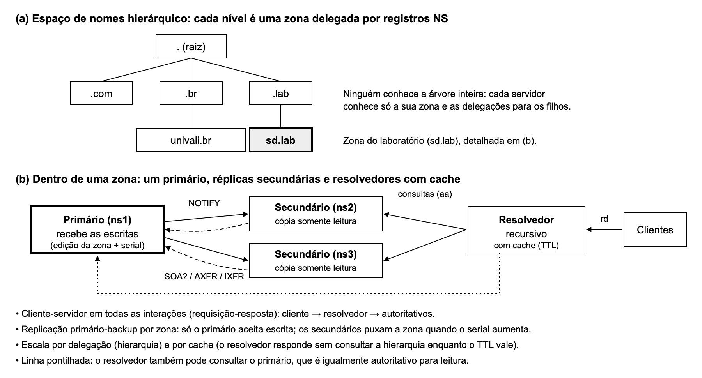
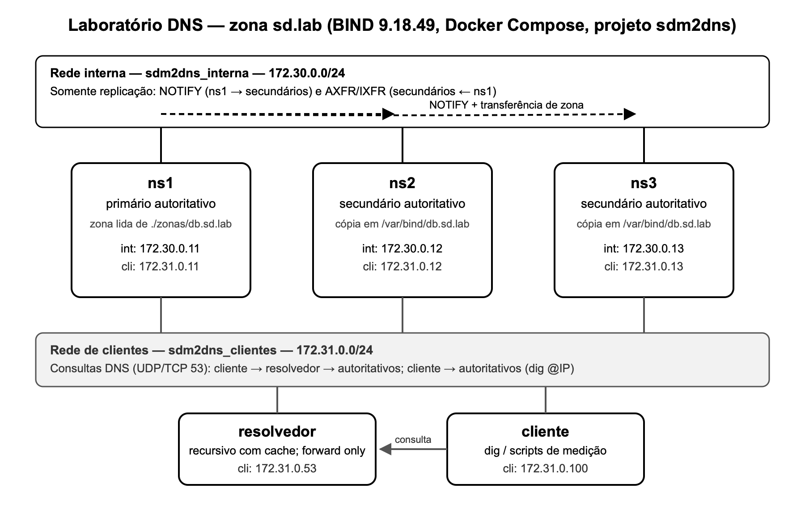
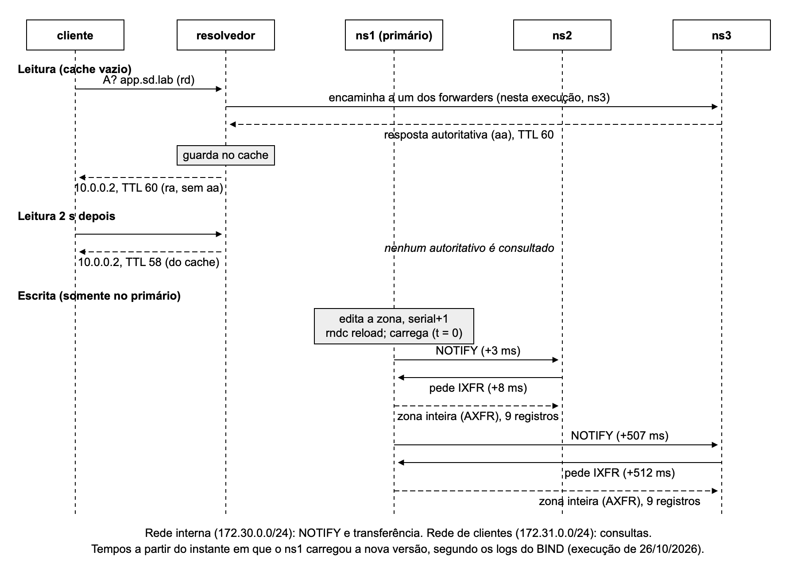
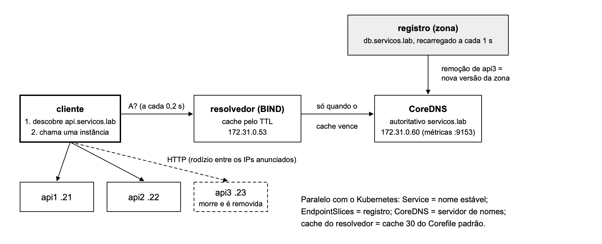

UNIVERSIDADE DO VALE DO ITAJAÍ
ESCOLA POLITÉCNICA
GUILHERME MOHR DOS SANTOS
ARTHUR RODRIGUES HAWRELIUK
DNS
Descoberta de serviços (cloud native)
Trabalho M2 — Sistemas Distribuídos
ITAJAÍ
2026
Sumário
1. Identificação
2. Resumo
3. Fundamentação
3.1. O DNS e o artigo seminal
3.2. Arquitetura
3.3. Conceitos usados nos experimentos
3.4. Descoberta de serviços (ênfase D)
4. Ambiente e reprodutibilidade
5. Experimentos
5.1. E1 — Subida e topologia
5.2. E2 — Caminho de uma operação
5.3. E3 — Replicação
5.4. E4 — Consistência
5.5. E5 — Falha e quórum
5.6. E6 — Partição de rede
5.7. E7 — Recuperação
5.8. E8 — Coordenação e ordem
5.9. E9 — Descoberta de serviços com CoreDNS
6. Questões comuns (Q1 a Q14)
7. Questões específicas (S1 a S4)
8. Quadro-síntese
9. Limitações e ameaças à validade
10. Papel de cada integrante
11. Declaração de uso de IA generativa
12. Referências
Disciplina: Sistemas Distribuídos — Ciência da Computação — UNIVALI, 2026/2. Professor: Ramices dos Santos Silva.
Equipe: Guilherme Mohr dos Santos e Arthur Rodrigues Hawreliuk.
Tema: T1 — Sistema de nomes distribuído (DNS). Sistema de referência: BIND 9 em contêineres Alpine (primário, secundários e resolvedor).
Ênfase: D — Descoberta de serviços (cloud native), com CoreDNS no experimento E9.
Este trabalho investiga o DNS como sistema distribuído real. Montamos, em contêineres Docker em um único computador,
um primário e dois secundários autoritativos BIND 9 para a zona sd.lab, um resolvedor com cache e um cliente,
e executamos os experimentos E1 a E8 do roteiro, com previsão registrada antes de cada um e cinco repetições nas
medições de tempo. A replicação é primário-backup assíncrona: com NOTIFY a alteração chegou aos secundários em 0,34 s em
média, contra 16,2 s apenas com o refresh. O cliente percebe a consistência eventual pelo cache: o resolvedor serviu o
valor antigo pelo TTL restante (até 47,8 s com TTL 60). Não há quórum: leituras continuaram com um único servidor,
escritas pararam sem o primário. Em uma partição, o secundário isolado respondeu a versão antiga até o expire de 300 s
e depois passou a SERVFAIL; ao voltar, recuperou o estado por transferência completa da zona. O serial do SOA ordena as
versões, e uma versão com serial menor foi ignorada pelos secundários. Na ênfase D (E9), com CoreDNS, um TTL de 5 s fez
o cliente abandonar uma instância removida em 2,7 s, contra 36,2 s com TTL de 60 s, ao custo de dez vezes mais consultas
ao servidor de nomes.
O DNS traduz nomes legíveis (como www.univali.br) em registros, principalmente endereços IP. Antes dele, a
tradução era feita por um único arquivo de hosts mantido de forma central e copiado para todas as máquinas, o que não
acompanhava o crescimento da rede. Mockapetris e Dunlap (1988) descrevem o projeto do DNS como um banco de dados
hierárquico, distribuído e replicado: o espaço de nomes é uma árvore, cada parte da árvore (zona) é administrada de
forma independente, e a autoridade sobre cada zona é delegada por registros NS. A especificação está nas RFC 1034 e
1035 (MOCKAPETRIS, 1987a; 1987b).
Em termos da disciplina, o DNS é o exemplo clássico de servidor de nomes: o cliente consulta um serviço de nomes (lookup) que devolve o endereço atual do servidor e só então faz a requisição direta (Unidade 2). A localização do dado não é calculada (como em uma DHT), nem consultada em um diretório central: é feita percorrendo a hierarquia de zonas (Unidade 4).
Figura 1 — Arquitetura do DNS: hierarquia de zonas e organização interna de uma zona

Fonte: elaborado pelos autores (2026), com base em Mockapetris e Dunlap (1988) e na Unidade 4.
Há dois papéis de servidor. O servidor autoritativo guarda os dados de uma zona e responde sobre ela com a
flag aa (resposta autoritativa). O resolvedor recursivo recebe a pergunta do cliente, percorre a
hierarquia (raiz, TLD, autoritativo) e guarda as respostas em cache pelo tempo indicado no TTL; ele responde com a flag
ra (recursão disponível). Na resolução recursiva o cliente pergunta uma vez e o resolvedor faz o trabalho;
na iterativa quem pergunta segue as referências (NS) de servidor em servidor (Unidade 4).
Dentro de uma zona, um servidor é o primário: é o único onde a zona é editada. Os secundários mantêm cópias somente leitura e respondem com a mesma autoridade. É a replicação primário-backup aplicada a cada zona.
Em ambientes de contêineres as instâncias de um serviço nascem e morrem com frequência e mudam de endereço. No
Kubernetes, o Service dá um nome estável a um conjunto de pods, e o CoreDNS traduz esse nome; o CoreDNS é configurado
por uma cadeia de plugins (Corefile), e a configuração padrão do cluster guarda respostas em cache por 30 s
(Unidade 4; COREDNS, 2024; KUBERNETES, 2024). O DNS passa a ser usado como diretório de serviços: os registros mudam
sempre que uma instância entra ou sai, e o TTL decide por quanto tempo um cliente pode continuar usando um endereço que
já não existe. O experimento E9 reproduz essa situação com CoreDNS servindo a zona servicos.lab.
Todo o laboratório roda em contêineres leves com Docker Compose, em um único computador, sem máquinas virtuais adicionais. No macOS o Docker Desktop executa os contêineres dentro de uma máquina virtual Linux própria; todos os contêineres compartilham o kernel e o relógio dessa máquina.
| Item | Versão / característica |
|---|---|
| Hardware | MacBook Air, Apple M3 (arm64), 16 GB de RAM |
| Sistema | macOS 26.4.1; Docker Desktop 29.4.3 (8 CPUs e 7,75 GiB destinados ao Docker); Docker Compose v5.1.3 |
| Imagem dos servidores BIND e do cliente | sd-bind, construída pela equipe: Alpine Linux 3.20.10 + BIND 9.18.49 (ESV) + bind-tools (dig, nsupdate) + coreutils |
| E9 | coredns/coredns:1.11.3 e traefik/whoami:v1.10.3 (servidor HTTP mínimo que representa as instâncias do serviço) |
| Medições | scripts em shell; estatística em Python 3.9 (biblioteca padrão) |
| Nó | Papel | Rede interna (172.30.0.0/24) | Rede de clientes (172.31.0.0/24) | Portas | Memória |
|---|---|---|---|---|---|
| ns1 | primário autoritativo de sd.lab | 172.30.0.11 | 172.31.0.11 | 53 UDP/TCP | limite 128 MB |
| ns2 | secundário autoritativo | 172.30.0.12 | 172.31.0.12 | 53 UDP/TCP | limite 128 MB |
| ns3 | secundário autoritativo | 172.30.0.13 | 172.31.0.13 | 53 UDP/TCP | limite 128 MB |
| resolvedor | recursivo com cache | — | 172.31.0.53 | 53 UDP/TCP | limite 128 MB |
| cliente | executa dig e as sondas | — | 172.31.0.100 | — | limite 32 MB |
| coredns (E9) | autoritativo de servicos.lab | — | 172.31.0.60 | 53; 9153 (métricas) | limite 64 MB |
| api1, api2, api3 (E9) | instâncias do serviço | — | 172.31.0.21 a .23 | 80 (HTTP) | limite 16 MB |
Memória medida com docker stats no E1: cerca de 26 MiB por servidor BIND, aproximadamente 104 MiB no
total do laboratório-base. O canal de controle rndc escuta apenas em 127.0.0.1:953 de cada contêiner.
Figura 2 — Topologia do laboratório

Fonte: elaborado pelos autores (2026).
A zona sd.lab usa os valores do roteiro: TTL 60 s, serial inicial 2026101401, refresh 30 s, retry 10 s,
expire 300 s e TTL negativo 20 s. Os secundários usam min-refresh-time 10 e min-retry-time 5
para que esses temporizadores curtos sejam aceitos.
Repositório Git: [LINK DO REPOSITÓRIO]. Para reproduzir:
git clone [LINK DO REPOSITÓRIO] trabalho-m2-dns && cd trabalho-m2-dns docker compose build # imagem sd-bind ./scripts/e1.sh # sobe o laboratório e grava evidências ./scripts/e2.sh ... ./scripts/e8.sh # um script por experimento docker compose --profile e9 up -d # CoreDNS e instâncias api1..api3 ./scripts/e9.sh docker compose --profile e9 down # remove só o que é do projeto
Cada script registra a saída completa em evidencias/eN/ e os dados das medições em
resultados/*.csv. A previsão de cada experimento está em evidencias/eN/PREVISAO.md, gravada no
Git antes da execução.
rndc é gerada na construção da imagem; sem ela, o rndc reload usado no roteiro não funciona.notify explicit com also-notify nos endereços internos, para que NOTIFY e
transferências passem só pela rede interna, condição para o E6. Os secundários usam notify no.rndc reload é conferido com uma consulta
ao SOA. Na primeira execução do E2, um reload feito logo após gravar o arquivo pelo macOS não carregou a nova versão;
o roteiro já alerta para conferir o serial após cada alteração.coreutils na imagem, para medir tempo com frações de segundo (date +%s.%N).Para cada experimento a previsão foi gravada no repositório antes da execução. Os tempos foram medidos dentro do
contêiner cliente com date +%s.%N; o instante de referência de uma alteração é o
rndc reload executado no ns1. Como todos os contêineres usam o relógio da mesma máquina virtual, os
instantes são comparáveis entre si. Desvio padrão: amostral (n − 1).
Objetivo. Mostrar o cluster no ar, com pelo menos três servidores autoritativos, e identificar o papel de cada nó.
Previsão. Os cinco contêineres sobem; os secundários, sem cópia da zona, recebem do primário uma transferência
completa (AXFR) pela rede interna; os três autoritativos respondem o mesmo serial com aa.
Procedimento. scripts/e1.sh: docker compose up -d, estado dos contêineres, logs de
transferência, SOA nos três autoritativos e rndc zonestatus.
$ docker compose logs ns2 | grep -i transfer (21/10/2026, trecho)
22:34:55.411 client 172.30.0.11#39939: received notify for zone 'sd.lab'
22:34:55.412 zone sd.lab/IN: Transfer started.
22:34:55.414 transfer of 'sd.lab/IN' from 172.30.0.11#53: Transfer completed:
1 messages, 9 records, 224 bytes, 0.002 secs (serial 2026101401)
$ for s in 11 12 13; do docker exec cliente dig @172.31.0.$s sd.lab SOA +short; done
ns1.sd.lab. admin.sd.lab. 2026101401 30 10 300 20
ns1.sd.lab. admin.sd.lab. 2026101401 30 10 300 20
ns1.sd.lab. admin.sd.lab. 2026101401 30 10 300 20
Resultado. Previsão confirmada. Os cinco contêineres ficaram em execução com os endereços da Figura 2. O ns1 registrou
AXFR started/ended para 172.30.0.12 e 172.30.0.13 (endereços internos). rndc zonestatus
mostrou type: primary no ns1 e type: secondary no ns2 e no ns3, com expires igual
ao instante da transferência mais 300 s. O ns2 transferiu ao receber o NOTIFY; o ns3 transferiu cerca de 0,5 s depois
pela verificação inicial que o secundário faz ao carregar, e o NOTIFY chegou a ele quando a zona já estava atualizada.
Análise. O cluster tem um coordenador definido por configuração (ns1) e duas réplicas. A primeira sincronização é sempre completa, porque o secundário não tem uma versão anterior a partir da qual pedir diferenças. O mesmo serial nos três servidores indica que todos têm a mesma versão da zona.
Objetivo. Mostrar o percurso de uma leitura e de uma escrita: quem recebe, quem decide, quem replica e quem responde.
Previsão. Ver evidencias/e2/PREVISAO.md: pelo resolvedor, resposta com ra e sem
aa, com a primeira consulta chegando a um autoritativo e a segunda saindo do cache; a escrita só no
primário, seguida de NOTIFY e transferência completa.
Procedimento. scripts/e2.sh: ativa o log de consultas (rndc querylog on) no
resolvedor e nos autoritativos, esvazia o cache do resolvedor, faz duas leituras pelo resolvedor e uma direta no ns1
com +norecurse; depois publica uma versão nova da zona (app de 10.0.0.2 para 10.0.0.3,
serial 2026102603) e coleta os logs.
Leitura 1 (cache vazio): flags qr rd ra app.sd.lab. 60 IN A 10.0.0.2 (172.31.0.53) Leitura 2 (2 s depois): flags qr rd ra app.sd.lab. 58 IN A 10.0.0.2 (172.31.0.53) Direta no ns1: flags qr aa app.sd.lab. 60 IN A 10.0.0.2 (172.31.0.11) ns3 17:59:08.144 client 172.31.0.53: query: app.sd.lab IN A ns1 17:59:11.959 zone sd.lab/IN: loaded serial 2026102603 ns1 17:59:11.959 zone sd.lab/IN: sending notifies (serial 2026102603) ns2 17:59:11.962 notify from 172.30.0.11: serial 2026102603 ns1 17:59:11.967 172.30.0.12: query: sd.lab IN IXFR ns1 17:59:11.967 IXFR version not in journal, falling back to AXFR ns3 17:59:12.466 notify from 172.30.0.11: serial 2026102603 ns1 17:59:12.471 172.30.0.13: AXFR-style IXFR ended: 9 records, 224 bytes Depois: ns1, ns2 e ns3 -> 10.0.0.3 resolvedor -> app.sd.lab. 52 IN A 10.0.0.2
Figura 3 — Diagrama de sequência do E2

Fonte: elaborado pelos autores (2026), a partir dos logs do experimento.
Resultado. Previsão confirmada. A primeira leitura foi repassada pelo resolvedor a um dos encaminhadores (nesta execução, o ns3, que registrou a consulta vinda de 172.31.0.53); a segunda saiu do cache (TTL 58, nenhum autoritativo registrou consulta). Na escrita, cada secundário pediu IXFR e recebeu a zona inteira, porque o primário carrega a zona de um arquivo e não guarda o histórico de diferenças entre versões. Ao final, os três autoritativos respondiam 10.0.0.3, e o resolvedor ainda devolvia 10.0.0.2 do cache.
Análise. A leitura é uma cadeia cliente-servidor (cliente → resolvedor → autoritativo), e o estado fica em dois lugares: a zona nos autoritativos e o cache no resolvedor. Quem decide uma escrita é só o primário; a replicação é iniciada pelo secundário (ele pede a transferência), e o NOTIFY só antecipa esse pedido. O valor antigo no resolvedor, depois de os autoritativos já terem convergido, é a janela de inconsistência medida no E4.
Objetivo. Medir o tempo de propagação de uma alteração do primário para os secundários, com e sem NOTIFY.
Previsão. Com NOTIFY, menos de 1 s, com o ns3 mais lento que o ns2 (como no E2). Sem NOTIFY, entre 0 e 30 s (refresh), com grande variação.
Procedimento. scripts/e3.sh. Em cada repetição: nova versão da zona com serial incrementado e
valor novo em app; uma sonda no cliente consulta ns2 e ns3 a cada 100 ms (sem recursão) e registra o
instante em que cada um responde o valor novo; o atraso é medido a partir do rndc reload. Cinco repetições
por cenário, com 8 s entre elas. Para o cenário sem NOTIFY, o ns1 é recriado com notify no
(docker-compose.semnotify.yml).
| Repetição | Com NOTIFY: ns2 (s) | Com NOTIFY: ns3 (s) | Sem NOTIFY: ns2 (s) | Sem NOTIFY: ns3 (s) |
|---|---|---|---|---|
| 1 | 0,160 | 0,554 | 10,307 | 15,864 |
| 2 | 0,063 | 0,651 | 15,377 | 15,933 |
| 3 | 0,123 | 0,565 | 20,393 | 15,898 |
| 4 | 0,072 | 0,597 | 18,744 | 16,324 |
| 5 | 0,040 | 0,590 | 16,904 | 16,368 |
| Média | 0,092 | 0,591 | 16,345 | 16,077 |
| Desvio padrão | 0,049 | 0,038 | 3,868 | 0,247 |
Considerando os dois secundários juntos (n = 10): com NOTIFY, média de 0,341 s (desvio 0,267 s); sem NOTIFY, média de 16,211 s (desvio 2,588 s). A resolução da sonda é de cerca de 0,1 s.
Resultado. Previsão confirmada: o NOTIFY reduziu a propagação de cerca de 16 s para menos de 1 s. O ns3 recebeu o NOTIFY sempre cerca de 0,5 s depois do ns2. Sem NOTIFY todos os atrasos ficaram dentro do refresh de 30 s.
Observação durante a execução. Uma primeira série com 2 s entre repetições deu atrasos de até 1,9 s com NOTIFY.
Os logs do ns2 mostraram NOTIFY chegando em intervalos de exatamente 5 s (18:00:26,745; 31,751; 36,750; 41,755;
46,758): o primário não envia NOTIFY da mesma zona mais de uma vez a cada 5 s (opção notify-delay
do BIND). A série foi refeita com 8 s entre repetições; a primeira está guardada em
evidencias/e3/e3-20261026-150025-intervalo-curto.txt e resultados/e3-intervalo-curto.csv.
Análise. A replicação é primário-backup assíncrona e iniciada pelo secundário: o primário confirma a escrita (carrega a zona) sem esperar nenhuma réplica, e cada réplica atualiza quando descobre a nova versão, seja pelo NOTIFY, seja pela consulta periódica ao SOA (refresh). Sem NOTIFY o atraso depende de em que ponto do ciclo de refresh a alteração caiu, o que explica a variação maior.
Objetivo. Evidenciar o modelo de consistência: medir por quanto tempo um cliente que usa o resolvedor lê um valor desatualizado depois de uma alteração.
Previsão. Os autoritativos convergem em menos de 1 s (E3), mas o resolvedor devolve o valor antigo até o TTL em cache vencer: a janela deve ser próxima do TTL restante no momento da alteração. Janela máxima teórica: TTL (60 s) + atraso de replicação (0,6 s). Para um nome inexistente, o NXDOMAIN fica em cache pelo TTL negativo (20 s).
Procedimento. scripts/e4.sh. (A) quatro consultas ao resolvedor com 5 s de intervalo.
(B) cinco repetições: esvazia o cache, consulta app pelo resolvedor, espera 10, 20, 30, 40 ou 50 s, lê o
TTL restante, publica um valor novo e consulta o resolvedor a cada 0,5 s até ele devolver o valor novo.
(C) cinco repetições: consulta um nome inexistente (NXDOMAIN em cache), cria o nome no primário e consulta o
resolvedor a cada 0,5 s até ele responder o endereço.
(A) instante resposta do resolvedor
...077,29 app.sd.lab. 60 IN A 10.0.3.23
...082,61 app.sd.lab. 55 IN A 10.0.3.23
...087,92 app.sd.lab. 49 IN A 10.0.3.23
...093,20 app.sd.lab. 44 IN A 10.0.3.23
(B) rep 4: novo valor 10.0.4.27 publicado; autoritativos ns1, ns2, ns3 já respondem 10.0.4.27
resolvedor: TTL 3 -> 10.0.4.26 | TTL 3 -> 10.0.4.26 | TTL 2 -> 10.0.4.26
TTL 59 -> 10.0.4.27
| Repetição (B) | Cache preenchido há | TTL restante na alteração | Janela medida | Diferença |
|---|---|---|---|---|
| 1 | 10 s | 50 s | 47,773 s | −2,23 s |
| 2 | 20 s | 40 s | 38,224 s | −1,78 s |
| 3 | 30 s | 30 s | 27,720 s | −2,28 s |
| 4 | 40 s | 20 s | 17,948 s | −2,05 s |
| 5 | 50 s | 10 s | 7,897 s | −2,10 s |
| Repetição (C) | 1 | 2 | 3 | 4 | 5 | Média | Desvio padrão |
|---|---|---|---|---|---|---|---|
| NXDOMAIN em cache após criar o nome | 19,187 s | 19,363 s | 19,870 s | 19,079 s | 19,622 s | 19,424 s | 0,323 s |
Resultado. Previsão confirmada. O TTL diminuiu a cada consulta (respostas do cache). Em todas as repetições os autoritativos já respondiam o valor novo enquanto o resolvedor devolvia o antigo. A janela medida acompanhou o TTL restante, ficando em média 2,09 s abaixo dele (desvio 0,20 s). Parte da diferença vem do tempo entre ler o TTL e publicar a alteração (cerca de 1 s no script); o restante não foi investigado. Nenhuma janela passou do máximo teórico (60,6 s). O cache negativo manteve o NXDOMAIN por 19,4 s, próximo dos 20 s do SOA.
Análise. O DNS oferece consistência eventual: depois de uma escrita, leituras podem devolver o valor antigo por um tempo limitado, e todos acabam vendo o valor novo. Há duas janelas distintas. A da replicação, entre autoritativos, é de menos de 1 s com NOTIFY (E3). A do cache, no resolvedor, é de até um TTL e é a que o cliente percebe. Não há garantia de ler a própria escrita: quem publica no primário e consulta pelo resolvedor pode continuar vendo o valor anterior.
Objetivo. Derrubar um nó e depois dois, e observar o que continua funcionando para leitura e para escrita.
Previsão. Leituras continuam enquanto houver um autoritativo com a zona válida; escritas param quando o primário cai, porque só ele publica versões. Não há quórum.
Procedimento. scripts/e5.sh. Em cada estado: leitura direta em cada autoritativo, leitura pelo
resolvedor com cache vazio, tentativa de publicar uma versão no primário e tentativa de atualização dinâmica
(nsupdate) nos secundários. Estados: três ativos; docker stop ns1; docker stop ns2.
Estado 1 (ns1, ns2, ns3): leituras NOERROR nos três; resolvedor 10 ms escrita no primário: publicada (serial 2026102635); ns2 e ns3 passam a servir 2026102635 nsupdate em 172.31.0.12 e 172.31.0.13: update failed: REFUSED Estado 2 (ns1 parado): 172.31.0.11 sem resposta; ns2 e ns3 NOERROR resolvedor NOERROR em 1202 ms escrita no primário: impossível (container is not running) nsupdate nos secundários: REFUSED ns2: expires: Mon, 26 Oct 2026 18:21:05 GMT Estado 3 (só ns3): ns1 e ns2 sem resposta; ns3 NOERROR; resolvedor NOERROR em 1205 ms escrita: impossível
| Nós ativos | Leitura | Escrita | Observado |
|---|---|---|---|
| 3 (ns1, ns2, ns3) | sim | sim (no ns1) | Leitura em qualquer autoritativo; escrita só pelo primário, propagada aos dois secundários. |
| 2 (ns2, ns3) | sim | não | Secundários respondem sozinhos; recusam atualização (REFUSED). Resolvedor responde, mas leva cerca de 1,2 s porque espera o tempo esgotar no ns1 antes de tentar outro. |
| 1 (ns3) | sim | não | Um único nó responde pela zona. A leitura continua até o expire (300 s sem contato com o primário). |
Resultado. Previsão confirmada.
Análise. O DNS não usa quórum. Cada leitura é atendida por uma única réplica (R = 1) sem consultar as outras; cada escrita é aplicada em um único nó, sempre o primário (W = 1). Com N = 3, R + W = 2 não é maior que N, então não há garantia de que uma leitura veja a escrita mais recente — coerente com a consistência eventual do E4. Em troca, a leitura tolera a perda de N − 1 servidores (2 de 3, demonstrado), e a escrita não tolera a perda do primário, que é o único ponto de falha para escrita. Não existe "perder o quórum": não há maioria a formar, nem eleição de um novo primário.
Objetivo. Isolar um nó do restante mantendo-o acessível ao cliente e observar os dois lados da partição.
Previsão. Uma alteração chega ao ns2 e não ao ns3; o ns3 continua respondendo a versão antiga, com autoridade, até o expire; depois passa a responder SERVFAIL. O resolvedor continua respondendo pelos outros servidores.
Procedimento. scripts/e6.sh: docker network disconnect sdm2dns_interna ns3 (só a rede
interna), confirmação de que o ns3 não alcança o ns1 e de que o cliente alcança o ns3, publicação de uma versão nova no
primário e consultas a ns2 e ns3 a cada 15 s por cerca de 6 minutos.
$ docker network disconnect sdm2dns_interna ns3 (18:16:53 UTC)
ns3 -> ns1 pela rede interna: ;; communications error to 172.30.0.11#53: timed out
cliente -> ns3: ns1.sd.lab. admin.sd.lab. 2026102635 30 10 300 20
ns3: serial 2026102635 expires: Mon, 26 Oct 2026 18:21:36 GMT
alteração no primário: serial 2026102636, app 10.0.6.36
log ns3: 18:17:36.979 refresh: retry limit for primary 172.30.0.11#53 exceeded
18:18:07.017 transfer from 172.30.0.11#53: failed to connect: timed out
... (nova tentativa a cada 30 s, aproximadamente)
18:21:36.918 zone sd.lab/IN: expired
resolvedor durante a partição (3 consultas com cache vazio): NOERROR, 10.0.6.36
| Tempo desde a partição | ns2 (lado do primário) | ns3 (isolado) |
|---|---|---|
| 7 s a 276 s (18 consultas) | NOERROR, serial 2026102636, app 10.0.6.36 | NOERROR, serial 2026102635, app 10.0.5.35 (versão antiga) |
| 292 s em diante | NOERROR, serial 2026102636, app 10.0.6.36 | SERVFAIL (deixou de responder pela zona) |
Resultado. Previsão confirmada. O cliente continuou alcançando o ns3 pela rede de clientes, e o ns3 deixou de alcançar o
primário. A versão nova chegou ao ns2 e não ao ns3. Por 276 s, os dois lados responderam com autoridade valores
diferentes para o mesmo nome. O ns3 tentou o refresh repetidamente (cerca de uma vez a cada 30 s) e registrou a
expiração da zona às 18:21:36,918, exatamente o instante previsto pelo rndc zonestatus (último refresh
bem-sucedido + 300 s), 283,6 s depois da partição. A partir daí passou a responder SERVFAIL. O resolvedor respondeu o
valor novo durante toda a partição, porque tinha encaminhadores do lado do primário.
Análise. O DNS escolhe as duas coisas em momentos diferentes. Até o expire, o lado isolado prioriza a disponibilidade: responde sem conseguir confirmar se a cópia é a mais recente, aceitando servir um valor desatualizado (inconsistência entre réplicas). Depois do expire, prioriza a consistência no sentido de não servir dados possivelmente velhos: fica indisponível para a zona (SERVFAIL) em vez de responder errado. O expire é o limite, configurado pelo administrador, de quanto tempo de desatualização se aceita. O lado do primário (ns1, ns2) continua disponível e consistente, inclusive para escrita. Para o cliente que usa um resolvedor com vários encaminhadores, a partição foi invisível: ele foi atendido pelo lado majoritário.
Objetivo. Reconectar o nó isolado e medir o tempo até ele voltar ao estado do primário.
Previsão inicial. Reconectado, o ns3 consultaria o SOA na tentativa seguinte (retry de 10 s) e faria uma transferência, voltando ao serial do primário em até cerca de 10 s.
Primeira execução (contrariou a previsão). O ns3 foi reconectado ao fim do E6, com a zona já expirada, usando
o mesmo IP (docker network connect --ip 172.30.0.13). Em 60 s ele não se recuperou, e o log mostrou o motivo:
18:23:52.781 listening on IPv4 interface eth1, 172.30.0.13#53 (reconectado)
18:24:40.479 zone sd.lab/IN: refresh: skipping zone transfer as primary 172.30.0.11#53
is unreachable (cached)
Depois das falhas durante a partição, o secundário guarda o primário como inalcançável por um período e não tenta o
refresh enquanto esse registro vale. Observado sem nenhuma intervenção (reconexão às 18:25:18,855), o ns3 só voltou a
transferir às 18:34:44,512 — 565,7 s depois — por transferência completa (9 registros), já que a zona havia
expirado (evidencias/e7/observacao-recuperacao-natural.txt). A previsão foi revista e registrada antes da
execução seguinte.
Procedimento revisado. scripts/e7.sh 5 40 900. Cada repetição parte do ns3 sincronizado,
desconecta o ns3 da rede interna, publica uma versão nova no primário, espera 40 s (tempo suficiente para pelo menos uma
verificação de refresh falhar), reconecta com o mesmo IP e mede, com uma sonda a cada 100 ms, o tempo até o ns3 servir o
serial do primário. Cenário A: nada mais é feito. Cenário B: 2 s após a reconexão o primário publica outra versão, o que
gera um NOTIFY. Cinco repetições por cenário.
| Repetição | A: só reconexão (s) | B: reconexão + nova versão (s) |
|---|---|---|
| 1 | 0,367 | 3,113 |
| 2 | 0,186 | 3,109 |
| 3 | 2,142 | 3,017 |
| 4 | 0,992 | 4,155 |
| 5 | 3,069 | 3,155 |
| Média | 1,351 | 3,310 |
| Desvio padrão | 1,228 | 0,475 |
rep 1 (A): 18:35:44.668 transfer of 'sd.lab/IN' from 172.30.0.11#53: resetting
18:35:44.669 zone sd.lab/IN: transferred serial 2026102638
rep 2 (B): 18:40:38.170 zone sd.lab/IN: transferred serial 2026102645 (sozinho)
18:40:39.039 notify from 172.30.0.11#39359: serial 2026102646
18:40:39.040 zone sd.lab/IN: transferred serial 2026102646
Estado final: ns1, ns2 e ns3 com serial 2026102652 e app 10.0.7.52
Resultado. Nas dez repetições com partição de 40 s o ns3 recuperou o estado em segundos: média de 1,351 s
(desvio 1,228 s) sem nenhuma ação, e de 3,310 s (desvio 0,475 s) no cenário B, cujo tempo inclui os 2 s de espera antes
da nova publicação. Os logs mostram que, ao ser reconectado, o ns3 retomou a tentativa de transferência que estava em
andamento (resetting) ou fez a próxima verificação logo em seguida; no cenário B ele já havia
recuperado sozinho a versão perdida e o NOTIFY trouxe a versão seguinte. Em nenhuma partição de 40 s apareceu o
registro de primário inalcançável; ele só apareceu após a partição longa do E6 (mais de 300 s, zona expirada), em que a
recuperação levou 565,7 s. Ao final, os três autoritativos tinham o mesmo serial e o mesmo valor. A previsão revista
para o cenário A (minutos) não se confirmou para partições curtas; a previsão inicial (segundos) se confirmou para
elas.
Análise. O nó que volta não reaplica um histórico de operações: ele compara o serial do SOA com o do primário e copia o estado atual da zona — uma transferência que funciona como um snapshot da versão vigente (Unidade 4). Com o primário sem histórico de diferenças, a transferência foi sempre completa. O tempo de recuperação depende do mecanismo de detecção de falhas do secundário: após uma partição curta, ele recupera na tentativa seguinte; após uma partição longa, o secundário deixa de tentar por um período (o primário fica registrado como inalcançável), e a recuperação pode levar minutos se nada mais acontecer. A recuperação após uma partição é diferente de reiniciar o contêiner: o ns3 manteve a sua cópia (até o expire) e só buscou a versão nova.
Objetivo. Mostrar quem coordena e qual é o mecanismo de versionamento; publicar uma versão com serial menor que o atual.
Previsão. O primário passa a servir a versão com serial menor, mas os secundários a ignoram, porque só aceitam seriais maiores; as réplicas ficam divergentes até uma publicação com serial maior.
Procedimento. scripts/e8.sh: tipo da zona em cada servidor; publicação no ns1 com serial
2026101401 (menor que 2026102652) e app = 10.0.8.1; consultas logo após e 40 s depois; logs; correção com
serial 2026102653.
ns1: type: primary ns2: type: secondary ns3: type: secondary MNAME: ns1.sd.lab.
ns1 18:43:58.302 zone sd.lab/IN: zone serial (2026101401/2026102652) has gone backwards
ns1 18:43:58.302 zone sd.lab/IN: loaded serial 2026101401
ns2 18:43:58.304 notify from 172.30.0.11#36934: zone is up to date
ns2 18:44:02.706 serial number (2026101401) received from primary 172.30.0.11#53
< ours (2026102652)
(repetido a cada 9 a 10 s no ns2 e no ns3)
após 40 s: ns1 2026101401 -> 10.0.8.1 ns2 e ns3 2026102652 -> 10.0.7.52
correção (2026102653): ns2 18:44:40.222 e ns3 18:44:40.523 transferred serial 2026102653
Resultado. Previsão confirmada. O ns1 avisou que o serial voltou para trás, mas carregou e serviu a versão do arquivo. Os secundários receberam o NOTIFY e consultaram o SOA repetidamente, sempre concluindo que a versão do primário era mais antiga que a deles; mantiveram o valor 10.0.7.52. Durante esse tempo o mesmo nome teve respostas autoritativas diferentes conforme o servidor. Com o serial 2026102653 os três convergiram em menos de 1 s.
Análise. O coordenador é estático: o ns1 é primário por configuração, e não existe eleição — o que se compara é o serial, e não o servidor. O serial é um relógio lógico monotônico mantido por um único processo: as réplicas só avançam para versões maiores (aritmética da RFC 1982), exatamente como um relógio de Lamport nunca volta (Unidade 1). Isso dá uma ordem total às versões, mas não protege contra erro do operador: ao "voltar" o serial, o primário ficou inconsistente com as réplicas. Com dois primários editando a mesma zona sem coordenação, cada um incrementaria o próprio serial; versões diferentes poderiam ter o mesmo número ou números que não refletem a ordem real das alterações, e os secundários aceitariam a de maior serial, descartando a outra sem detectar o conflito — o serial é um contador escalar e não identifica concorrência, que exigiria um relógio vetorial (Unidade 1) ou um único escritor.
Objetivo. Registrar e remover instâncias de um serviço dinamicamente com CoreDNS; medir o efeito do TTL baixo sobre a carga e sobre a rapidez com que os clientes deixam de usar uma instância morta; relacionar com o Kubernetes.
Figura 4 — Montagem do E9

Fonte: elaborado pelos autores (2026).
Montagem. O CoreDNS 1.11.3 (172.31.0.60) é autoritativo da zona servicos.lab com o plugin
file, que relê o arquivo da zona a cada 1 s e carrega a versão nova quando o serial aumenta; o plugin
prometheus expõe o contador de consultas recebidas. O nome api.servicos.lab anuncia as três
instâncias (api1, api2, api3: 172.31.0.21 a 23), servidores HTTP mínimos. O resolvedor BIND encaminha
servicos.lab ao CoreDNS e guarda as respostas em cache. O cliente, a cada 0,2 s, descobre as instâncias pelo
resolvedor e faz uma requisição HTTP (tempo limite de 1 s) a uma delas, em rodízio. O caminho de consulta passa por um
cache, sem o qual o TTL não teria efeito.
Previsão. Ver evidencias/e9/PREVISAO.md: CoreDNS recebendo cerca de 60/TTL consultas por minuto
(~12 com TTL 5 s, ~1 com TTL 60 s); após a remoção, o CoreDNS para de anunciar a instância em até ~1 s, e o resolvedor e
o cliente continuam usando o endereço antigo até o TTL em cache vencer.
Procedimento. scripts/e9.sh 5 60, para TTL de 5 s e de 60 s. Parte A: cinco janelas de 60 s com o
cliente ativo e o serviço estável, contando as consultas que chegam ao CoreDNS. Parte B: cinco repetições em que, com o
cliente ativo, a instância api3 é parada (docker stop) e retirada da zona no mesmo instante; mede-se quando o
CoreDNS deixa de anunciá-la, quando o resolvedor deixa de anunciá-la e a última tentativa do cliente nela. O aquecimento
antes da remoção foi de 10 s (TTL 5) e de 20 s (TTL 60), a partir do cache vazio.
TTL 5, rep 1 — log do cliente (tempo em relação à remoção, IP escolhido, resultado, nº de instâncias anunciadas) -1,665 s 172.31.0.23 OK 3 -0,936 s 172.31.0.23 FALHA 3 -0,063 s 172.31.0.23 FALHA 3 +1,650 s 172.31.0.23 FALHA 3 +3,353 s 172.31.0.23 FALHA 3 +4,629 s 172.31.0.22 OK 2 (a partir daí só 172.31.0.21 e .22)
| Medida (média de 5; desvio padrão) | TTL 5 s | TTL 60 s |
|---|---|---|
| Consultas do cliente ao resolvedor por janela de 60 s | 243,0 (4,2) | 245,6 (1,5) |
| Consultas recebidas pelo CoreDNS por minuto | 12,0 (0,0) | 1,2 (0,4) |
| Tempo até o CoreDNS deixar de anunciar a api3 | 0,701 s (0,458) | 0,724 s (0,402) |
| Tempo até o resolvedor deixar de anunciar a api3 | 3,640 s (0,261) | 37,213 s (0,344) |
| Última tentativa do cliente na api3 após a remoção | 2,650 s (0,909) | 36,177 s (0,774) |
| Requisições do cliente com falha | 2,8 (0,8) | 22,6 (0,5) |
Resultado. Previsão confirmada. O cliente fez cerca de 245 consultas por minuto ao resolvedor nos dois casos, mas o CoreDNS recebeu 12 por minuto com TTL 5 s e 1,2 com TTL 60 s: o TTL baixo multiplicou por 10 a carga no servidor de nomes. A remoção chegou ao CoreDNS em menos de 1,4 s (intervalo de recarga do arquivo) nos dois casos. O resolvedor continuou anunciando a instância morta pelo tempo restante do TTL em cache: 3,6 s com TTL 5 e 37,2 s com TTL 60. Com TTL 60 os valores ficaram próximos entre as repetições porque a remoção ocorreu sempre cerca de 20 s depois de o cache ser preenchido, restando cerca de 40 s de TTL. Enquanto a instância estava na lista, o cliente continuou escolhendo-a e falhou 2,8 vezes em média com TTL 5 e 22,6 vezes com TTL 60; cada falha custou o tempo limite de 1 s.
Análise. O TTL controla o compromisso entre atualização rápida e custo de consultas: o tempo em que clientes usam
uma instância que já não existe é limitado pelo TTL (consistência eventual do registro de serviços, E4), e a carga no
servidor de nomes cresce na proporção inversa do TTL. A remoção no servidor autoritativo é quase imediata; o que atrasa a
descoberta é o cache. No Kubernetes (Unidade 4), o Service é o nome estável, as EndpointSlices guardadas no etcd são o
registro das instâncias e o CoreDNS responde a partir delas; a configuração padrão do cluster guarda respostas por 30 s
(cache 30), o que corresponde a uma janela entre os dois cenários medidos. Para serviços comuns, o
Kubernetes evita expor diretamente os IPs dos pods: o nome resolve para um IP virtual estável (ClusterIP) e o kube-proxy
redistribui as conexões, de modo que a troca de instâncias não depende do TTL; já para serviços headless, como os de
StatefulSets, o nome resolve para os IPs dos pods e o comportamento é o observado aqui. O registro em etcd é consistente
(Raft); a inconsistência visível ao cliente vem só dos caches de DNS.
Q1. Que problema de sistemas distribuídos o sistema resolve? Quais transparências oferece?
O DNS resolve o problema de localizar recursos em uma rede de escala mundial: traduzir nomes estáveis e legíveis em
endereços que mudam, sem um diretório central. Transparências (Unidade 1): localização — o usuário usa
www.univali.br sem saber onde o servidor está nem em qual endereço; acesso — o mesmo nome e a
mesma consulta funcionam para qualquer domínio, administrado por qualquer organização; replicação — a zona tem
várias cópias (no laboratório, ns1, ns2 e ns3) e o cliente não sabe qual respondeu (no E2 a resposta veio do ns3);
falha — com até dois dos três autoritativos parados, as leituras continuaram (E5). A transparência de falha não
é total: o resolvedor levou cerca de 1,2 s para responder com o ns1 parado (E5), e a transparência de replicação
também não, porque réplicas e caches podem devolver versões diferentes por um tempo (E4, E6). Concorrência não
é um problema relevante para o cliente, que só lê.
Q2. Qual é a arquitetura? Estilo, componentes e papéis.
A arquitetura de sistema é cliente-servidor em todos os saltos, no modelo requisição-resposta (Unidade 2): o cliente é cliente do resolvedor, e o resolvedor é cliente dos autoritativos. A comunicação entre os servidores de uma zona também é cliente-servidor, e não peer-to-peer: os papéis são fixos e assimétricos — o secundário pede (SOA, IXFR, AXFR) e o primário serve; o NOTIFY é só um aviso do primário. A organização do espaço de nomes é hierárquica e em camadas de delegação (raiz, TLD, domínios), e o cache do resolvedor faz o papel de proxy com cache da Unidade 2. Componentes e papéis: primário (aceita escritas), secundários (réplicas somente leitura), resolvedor recursivo (cache) e clientes. Diagrama próprio na Figura 1; topologia do laboratório na Figura 2.
Q3. Como um cliente localiza um dado ou serviço?
Pela resolução hierárquica, nem por diretório central nem por cálculo (hash). Com cache frio, o resolvedor
recursivo pergunta a um servidor raiz, que devolve os servidores NS do TLD; o TLD devolve os NS autoritativos do
domínio; o autoritativo devolve o registro com um TTL; o resolvedor guarda tudo em cache e responde ao cliente
(Unidade 4). Perguntas seguintes, dentro do TTL, são respondidas do cache sem tocar a hierarquia (E2: a segunda
consulta saiu do cache com TTL 58). No laboratório o resolvedor encaminha sd.lab diretamente aos três
autoritativos (forward only), sem raiz e TLD.
Q4. Como os nós se comunicam?
Por troca de mensagens diretas sobre sockets (Unidades 2 e 3), em formato binário próprio do DNS (RFC 1035), na porta 53. Consultas usam principalmente UDP: uma requisição e uma resposta, comunicação síncrona do ponto de vista do cliente, que espera a resposta. Transferências de zona usam TCP, pelo volume e pela necessidade de entrega confiável e ordenada. Quanto à semântica de entrega (Unidade 3), é preciso separar transporte de operação: o UDP não garante entrega, e o cliente DNS retransmite a consulta após um tempo limite (no E5, o resolvedor esperou o tempo esgotar no ns1 e tentou outro servidor), o que dá semântica de ao menos uma vez para a consulta — segura porque a leitura é idempotente. O NOTIFY também é retransmitido até ser confirmado. A transferência de zona entrega a versão inteira (ou as diferenças) de forma confiável pelo TCP e é idempotente: repetir a transferência da mesma versão não muda o estado da réplica.
Q5. Qual é o modelo de replicação?
Primário-backup por zona, com propagação assíncrona. N = 3 réplicas no laboratório (ns1, ns2, ns3); só o primário aceita escritas (E5: os secundários responderam REFUSED a atualizações). O primário confirma a escrita sem esperar as réplicas; cada secundário busca a versão nova quando recebe o NOTIFY ou quando o refresh vence. Medido no E3: 0,341 s em média com NOTIFY e 16,211 s sem NOTIFY.
Q6. Qual modelo de consistência o sistema oferece?
Consistência eventual (Unidade 4). Demonstração (E4): depois de uma alteração, os três autoritativos responderam o valor novo em menos de 1 s, mas o resolvedor continuou devolvendo o valor antigo até o TTL do cache vencer — janelas de 7,9 s a 47,8 s, acompanhando o TTL restante; o nome criado depois de consultado continuou como inexistente por 19,4 s (cache negativo). Há duas fontes de inconsistência: o atraso de replicação entre autoritativos (E3) e o cache do resolvedor (E4). Não há leitura das próprias escritas: quem publica no primário e lê pelo resolvedor pode ver o valor anterior. Durante uma partição a divergência entre réplicas dura até o expire (E6).
Q7. O sistema usa quórum?
Não. Leitura em uma réplica (R = 1), escrita em um único nó, o primário (W = 1); N = 3. R + W = 2 ≤ N, portanto uma leitura pode não encontrar a escrita mais recente, coerente com a consistência eventual (Q6). Para leitura o sistema tolera f = N − 1 = 2 falhas; para escrita não tolera a falha do primário. No E5, com ns1 e ns2 parados, o ns3 continuou respondendo sozinho; com o ns1 parado nenhuma escrita foi possível. Como não há maioria a formar, não há como "perder o quórum": a disponibilidade de leitura acaba só quando nenhuma réplica tem a zona válida (expire, E6).
Q8. Existe líder, primário ou coordenador? Como é escolhido?
Existe um primário estático por zona, definido no arquivo de configuração (type primary no ns1;
primaries { 172.30.0.11; } nos secundários) e indicado no campo MNAME do SOA. Não há eleição. Nos algoritmos do
valentão e do anel (Unidade 2), os processos detectam a falha do líder e elegem outro, o de maior identificador. No DNS, se o
primário falha, nenhum secundário assume (E5); a troca é feita pelo administrador, alterando a configuração. O DNS evita a
eleição porque escritas são raras e leituras não dependem do primário.
Q9. Como o sistema ordena eventos ou versões?
Pelo serial do SOA, um número de 32 bits que identifica a versão da zona e é comparado segundo a RFC 1982. Funciona como um relógio lógico de Lamport (Unidade 1) com um único processo que gera eventos: o primário incrementa o serial a cada versão, e os secundários só aceitam versões com serial maior que o seu, o que impõe uma ordem total às versões e garante que uma réplica nunca volte no tempo. No E8, ao publicar um serial menor, os secundários mantiveram a versão que já tinham. Relógios vetoriais e multicast ordenado (Unidades 1 e 3) não são necessários porque só um processo escreve: não há eventos concorrentes a ordenar. Com dois primários editando a mesma zona, dois incrementos independentes poderiam gerar o mesmo serial para conteúdos diferentes, e o serial não detecta essa concorrência — seria preciso um relógio vetorial ou coordenação.
Q10. Qual modelo de falhas é assumido? Como as falhas são detectadas?
O BIND assume falhas por parada e por omissão (Unidade 1): um servidor que não responde, ou uma mensagem perdida. A
detecção é por tempo esgotado, sem heartbeat: o resolvedor espera a resposta e tenta outro servidor (E5: cerca de
1,2 s com o ns1 parado); o secundário consulta o SOA do primário a cada refresh e, se não obtém resposta, tenta de novo a
cada retry (E6). Se o primário fica inalcançável por mais que o expire, o secundário conclui que a cópia pode estar
desatualizada e deixa de responder pela zona (E6: o ns3 isolado registrou zone sd.lab/IN: expired 300 s após o último refresh bem-sucedido e passou a responder SERVFAIL). Falha de um nó: leituras continuam nas outras réplicas;
se for o primário, escritas param. Falha da maioria (dois de três): leituras ainda continuam no nó restante até o expire
(E5). Falhas bizantinas (respostas forjadas) não são tratadas pelo DNS básico; o DNSSEC protege a integridade (S4).
Q11. Diante de uma partição, o sistema prioriza consistência ou disponibilidade?
Depende do momento, e o experimento E6 mostra as duas fases. Com o ns3 isolado apenas da rede interna, até o expire o ns3 continuou respondendo com autoridade a versão antiga (serial 2026102635) enquanto o ns2 já respondia a nova (2026102636): disponibilidade com inconsistência — comportamento AP no teorema CAP (Unidade 1, Unidade 4). Quando o expire de 300 s venceu, o ns3 passou a responder SERVFAIL: para não servir um dado que pode estar muito desatualizado, abriu mão da disponibilidade daquela réplica. Portanto o DNS é AP com um limite de tempo para a desatualização, definido pelo expire. O lado do primário continuou disponível e consistente. Pela extensão PACELC (indicada no roteiro), sem partição o DNS escolhe latência em vez de consistência: as respostas saem de caches e réplicas sem coordenação, ao custo da janela de inconsistência medida no E4. Para comparação, a Unidade 4 classifica o etcd como CP (sem quórum, não aceita escrita).
Q12. Como um nó que volta recupera o estado?
Por transferência de zona, pedida pelo próprio secundário: ele compara o serial do SOA com o do primário e, se o do primário é maior, pede IXFR (só as diferenças); como o primário do laboratório carrega a zona de um arquivo e não guarda histórico de versões, a resposta foi sempre a zona inteira (AXFR). Não há reexecução de um log de operações: a transferência entrega o estado atual completo, como um snapshot da versão vigente. Diferente de um snapshot de Chandy-Lamport, não é preciso capturar mensagens em trânsito, porque só um processo (o primário) produz o estado e cada versão é identificada pelo serial (Unidade 4). No E7, após partições de 40 s, o ns3 recuperou o estado em 1,351 s em média; após a partição longa do E6, com a zona expirada, levou 565,7 s, porque o secundário passou a considerar o primário inalcançável e suspendeu as tentativas. Um nó novo faz o mesmo: carrega a zona inteira por AXFR, como os secundários no E1.
Q13. Quais problemas clássicos aparecem e como são resolvidos ou evitados?
Q14. Onde o sistema é usado, quais as limitações e que cuidados de segurança exige?
Em toda a Internet (web, e-mail, CDNs que redirecionam o cliente para o servidor mais próximo — Unidade 2) e dentro de
clusters como diretório de serviços (CoreDNS no Kubernetes, E9). Limitações: consistência apenas eventual, com janela de
até um TTL (E4); escrita dependente de um único primário (E5); TTL baixo acelera mudanças, mas aumenta a carga (E9: com TTL 5 s o CoreDNS recebeu 12 consultas por minuto, contra 1,2 com TTL 60 s).
Segurança (Unidade 4): o DNS nasceu sem autenticação nem sigilo. Ameaças: envenenamento de cache, interceptação das
consultas, sequestro de delegação e amplificação em ataques de negação de serviço. Defesas: DNSSEC (integridade e
autenticidade), DoT e DoH (sigilo entre cliente e resolvedor), bloqueio e 2FA no registrador, limitação de taxa e
resolvedores fechados. No laboratório, a transferência de zona foi limitada aos endereços internos dos secundários
(allow-transfer) e os secundários recusaram atualizações (E5).
S1. Por que o DNS pode oferecer apenas consistência eventual? Quais mecanismos limitam a janela de inconsistência e como ajustá-los para um serviço que muda com frequência?
Porque a grande maioria das operações é leitura e os dados mudam pouco: um endereço desatualizado por alguns segundos ou minutos raramente causa dano, e o ganho é enorme — leituras atendidas por qualquer réplica e por caches perto do cliente, sem coordenação. Exigir consistência forte obrigaria cada leitura a consultar o primário ou uma maioria, o que não escala para a Internet. Mecanismos que limitam a janela, com o que foi medido:
Para um serviço que muda com frequência: manter o NOTIFY ligado; usar TTL baixo nos registros que mudam (a Unidade 4 cita 30 a 60 s para facilitar failover em nuvem), sabendo que isso aumenta a carga nos servidores e a latência média das consultas (E9: com TTL 5 s o cliente deixou de usar a instância removida em 2,7 s e o servidor recebeu 12 consultas por minuto; com TTL 60 s, 36,2 s e 1,2 consulta por minuto); reduzir o TTL com antecedência antes de uma troca planejada e voltar a aumentá-lo depois; manter refresh na ordem de minutos como proteção caso o NOTIFY se perca; e manter o expire longo (dias), para que uma falha do primário não derrube as leituras. O TTL é o parâmetro que mais pesa para o cliente, porque a janela que ele percebe é dominada pelo cache, e não pela replicação.
S2. Resolução iterativa x recursiva: onde fica o estado (cache) e qual o impacto na escalabilidade e na carga dos servidores raiz?
Na recursiva, o cliente pergunta uma vez ao resolvedor, que faz todo o trabalho e guarda o resultado em cache; o estado fica no resolvedor e é compartilhado por todos os seus clientes. Na iterativa, quem pergunta recebe referências (NS) e segue de servidor em servidor; os servidores da hierarquia não guardam estado da consulta, e o cache, se houver, fica com quem iterou (Unidade 4). Na prática combinam-se as duas: o cliente faz consultas recursivas ao resolvedor, e o resolvedor faz consultas iterativas à raiz, ao TLD e ao autoritativo. Impacto: como o resolvedor guarda também as delegações (os NS dos TLDs), a raiz só é consultada quando essas delegações expiram, e não a cada nome; um único resolvedor absorve as perguntas repetidas de muitos clientes. No laboratório, a segunda consulta do E2 não chegou a nenhum autoritativo, e no E9 cerca de 245 consultas por minuto do cliente ao resolvedor geraram apenas 12 (TTL 5 s) ou 1,2 (TTL 60 s) consultas por minuto ao servidor autoritativo. A recursiva simplifica o cliente e permite cache compartilhado; a iterativa distribui a carga entre os servidores da hierarquia, que não precisam manter estado.
S3. O primário é um ponto único de falha? Para leitura, para escrita, ou ambos? Como as operações reais mitigam isso?
Só para escrita. No E5, com o ns1 parado, nenhuma versão nova pôde ser publicada e os secundários recusaram atualizações; as leituras continuaram nos secundários e pelo resolvedor, até com dois servidores parados. Para leitura, o primário só se torna indispensável depois do expire: sem contato com ele por 300 s, os secundários param de responder (no E6, o ns3 isolado passou a SERVFAIL ao fim do expire). Mitigações usadas na prática: primário oculto — o primário não aparece nos registros NS e não atende clientes, só alimenta os secundários; fica protegido de ataques de negação de serviço e pode ficar fora do ar por algum tempo sem afetar as leituras; anycast — o mesmo endereço é anunciado a partir de vários locais e a rede entrega a consulta à instância mais próxima (a Unidade 4 cita 13 identidades de servidores raiz com centenas de instâncias via anycast); múltiplos provedores — secundários em provedores e redes diferentes, para que a falha de um provedor não torne o domínio irresolúvel; e expire longo, que dá tempo para recuperar o primário.
S4. Como o DNSSEC garante integridade sem exigir confiança no servidor que responde? Relação com quóruns bizantinos.
O DNSSEC assina os dados da zona com a chave privada do dono da zona (registros RRSIG) e publica a chave pública (DNSKEY); a chave de cada zona é referenciada pela zona pai (registro DS), formando uma cadeia de confiança a partir da raiz (Unidade 4; RFC 4033). O resolvedor valida a assinatura com a cadeia de chaves: não importa qual servidor entregou a resposta — primário, secundário, um cache ou um intermediário —, porque nenhum deles consegue produzir uma assinatura válida sem a chave privada. A confiança passa do servidor para a chave. Na Unidade 4, quóruns bizantinos (Malkhi e Reiter) mostram que réplicas que podem mentir exigem mais réplicas: n ≥ 4f + 1 para dados sem assinatura (quórum de mascaramento, o cliente precisa de uma maioria de respostas iguais) e n ≥ 3f + 1 para dados autoautenticados (quórum de disseminação). Com dados assinados, o cliente detecta sozinho uma resposta adulterada e não precisa de votação entre réplicas; um servidor mentiroso ainda pode omitir a resposta ou reenviar uma versão antiga ainda válida, o que se limita pelo prazo de validade das assinaturas. O DNSSEC dá autenticidade e integridade, não sigilo; DoT e DoH dão sigilo apenas no trecho entre cliente e resolvedor.
| Aspecto | Resposta da equipe (com referência à evidência) |
|---|---|
| Estilo arquitetural e papéis | Cliente-servidor (requisição-resposta) com espaço de nomes hierárquico. Papéis: primário, secundários, resolvedor recursivo com cache, cliente (E1, E2; Figura 1). |
| Como o dado ou serviço é localizado | Resolução hierárquica (raiz → TLD → autoritativo), com cache no resolvedor (E2). |
| Modelo de replicação (N réplicas; quem aceita escritas) | Primário-backup assíncrono, N = 3; só o primário aceita escritas; secundários puxam a zona por NOTIFY ou refresh (E3: 0,34 s com NOTIFY, 16,2 s sem). |
| Modelo de consistência observado | Eventual: autoritativos convergem em menos de 1 s, resolvedor serve o valor antigo até o TTL vencer (E4: janela até 47,8 s com TTL 60; cache negativo 19,4 s). |
| Quórum (N, R, W ou maioria) e falhas toleradas | Sem quórum: N = 3, R = 1, W = 1 (sempre o primário). Leitura tolera 2 falhas; escrita não tolera a falha do primário (E5). |
| Líder ou coordenador e forma de escolha | Primário estático, definido na configuração; sem eleição (E5, E8). |
| Mecanismo de ordenação ou versionamento | Serial do SOA, monotônico, comparado pela RFC 1982; secundários ignoram serial menor (E8). |
| Comportamento sob partição (C ou A) | Até o expire, A: o nó isolado responde a versão antiga com autoridade. Depois do expire, deixa de responder (SERVFAIL). O lado do primário segue disponível e consistente (E6). |
| Mecanismo de recuperação | Transferência de zona pedida pelo secundário ao detectar serial maior (IXFR com fallback para AXFR); cópia do estado atual, sem log. Partição de 40 s: 1,35 s em média; após o expire: 565,7 s (E7). |
| Problemas clássicos presentes e como são tratados | Eleição e exclusão mútua evitadas (primário único); ordenação pelo serial; sem consenso; integridade contra respostas falsas pelo DNSSEC (Q13, S4). |
docker network disconnect). Uma partição real pode ser parcial, assimétrica ou intermitente.sd.lab).| Integrante | Pesquisa | Experimentos | Escrita |
|---|---|---|---|
| Guilherme Mohr dos Santos | Pesquisa sobre o DNS e primeira versão das respostas Q1 a Q14 e S1 a S4 | — | Estrutura do documento (capa e questionário) |
| Arthur Rodrigues Hawreliuk | Leitura do roteiro e da documentação do BIND e do CoreDNS | Montagem do laboratório, execução de E1 a E9 e medições | Seções de ambiente e experimentos; revisão das respostas com base nos resultados |
A equipe usou o assistente Claude (Anthropic) como apoio na escrita dos arquivos de configuração e dos scripts do
laboratório, na organização das medições e na revisão do texto deste relatório. Todos os experimentos foram executados
no ambiente descrito na Seção 4; os resultados apresentados vêm das saídas registradas em evidencias/ e
resultados/ no repositório. As respostas foram conferidas com o material da disciplina, o roteiro do
trabalho e as referências listadas.
ANDREWS, M. RFC 2308: Negative caching of DNS queries (DNS NCACHE). IETF, 1998. Disponível em: https://www.rfc-editor.org/rfc/rfc2308. Acesso em: 26 out. 2026.
ARENDS, R.; AUSTEIN, R.; LARSON, M.; MASSEY, D.; ROSE, S. RFC 4033: DNS security introduction and requirements. IETF, 2005. Disponível em: https://www.rfc-editor.org/rfc/rfc4033. Acesso em: 26 out. 2026.
COREDNS. CoreDNS manual. 2024. Disponível em: https://coredns.io/manual/toc/. Acesso em: 26 out. 2026.
COULOURIS, G.; DOLLIMORE, J.; KINDBERG, T.; BLAIR, G. Sistemas distribuídos: conceitos e projeto. 5. ed. Porto Alegre: Bookman, 2013.
ELZ, R.; BUSH, R. RFC 1982: Serial number arithmetic. IETF, 1996. Disponível em: https://www.rfc-editor.org/rfc/rfc1982. Acesso em: 26 out. 2026.
INTERNET SYSTEMS CONSORTIUM. BIND 9 Administrator Reference Manual. Versão 9.18. Disponível em: https://bind9.readthedocs.io. Acesso em: 26 out. 2026.
KUBERNETES. DNS for Services and Pods. 2024. Disponível em: https://kubernetes.io/docs/concepts/services-networking/dns-pod-service/. Acesso em: 26 out. 2026.
LAMPORT, L. Time, clocks, and the ordering of events in a distributed system. Communications of the ACM, v. 21, n. 7, p. 558-565, 1978.
MALKHI, D.; REITER, M. Byzantine quorum systems. Distributed Computing, v. 11, n. 4, p. 203-213, 1998.
MOCKAPETRIS, P. RFC 1034: Domain names: concepts and facilities. IETF, 1987a. Disponível em: https://www.rfc-editor.org/rfc/rfc1034. Acesso em: 26 out. 2026.
MOCKAPETRIS, P. RFC 1035: Domain names: implementation and specification. IETF, 1987b. Disponível em: https://www.rfc-editor.org/rfc/rfc1035. Acesso em: 26 out. 2026.
MOCKAPETRIS, P.; DUNLAP, K. J. Development of the Domain Name System. In: ACM SIGCOMM, 1988, Stanford. Proceedings [...]. New York: ACM, 1988. p. 123-133.
OHTA, M. RFC 1995: Incremental zone transfer in DNS. IETF, 1996. Disponível em: https://www.rfc-editor.org/rfc/rfc1995. Acesso em: 26 out. 2026.
SILVA, R. S. Sistemas Distribuídos: slides das Unidades 1 a 4. Itajaí: UNIVALI, 2026. Material de aula.
SILVA, R. S. Trabalho 2: Sistemas distribuídos reais na prática: pesquisa, experimentos e seminário. Itajaí: UNIVALI, 2026. Roteiro da disciplina de Sistemas Distribuídos.
TANENBAUM, A. S.; VAN STEEN, M. Distributed systems. 4. ed. 2023. Disponível em: https://www.distributed-systems.net. Acesso em: 26 out. 2026.
VIXIE, P. RFC 1996: A mechanism for prompt notification of zone changes (DNS NOTIFY). IETF, 1996. Disponível em: https://www.rfc-editor.org/rfc/rfc1996. Acesso em: 26 out. 2026.
VIXIE, P.; THOMSON, S.; REKHTER, Y.; BOUND, J. RFC 2136: Dynamic updates in the Domain Name System (DNS UPDATE). IETF, 1997. Disponível em: https://www.rfc-editor.org/rfc/rfc2136. Acesso em: 26 out. 2026.